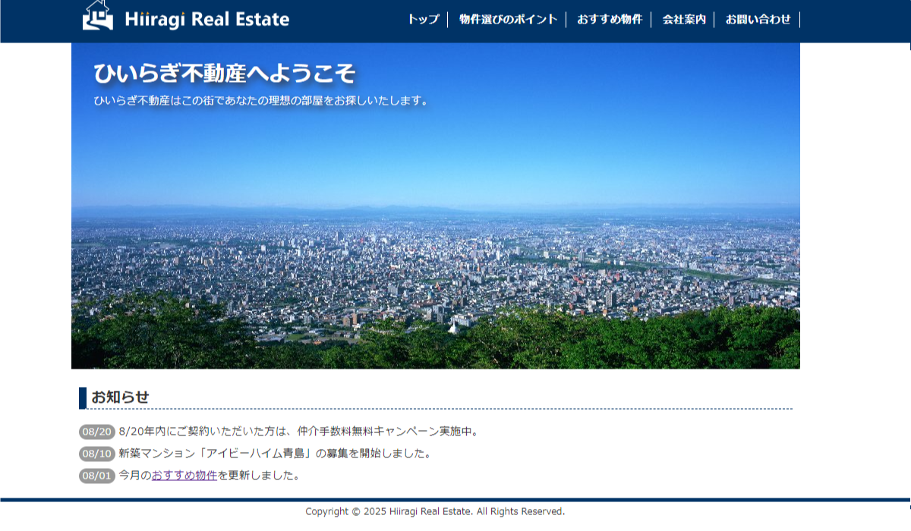
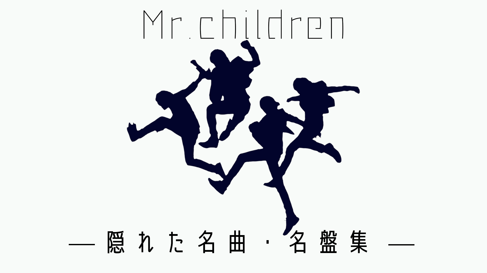

WORKS
website

ひいらぎ不動産
【制作感想】参考の教科書と、授業の講義を受けながらこのwebサイトを作成しました。
このサイトを作成しながらhtml、cssをかなり理解することができました。
大変な作業でしたが、このwebサイトを作成し多くを学んだことで、短期間で簡単なwebサイト作成は
できるようになったので、凄く勉強になりました。

Mr.children 隠れた名曲・名盤集
【制作感想】日建学院WEBデザイン科、卒業制作作品として制作したサイトです。
卒業制作を制作するにあたって、何をつくるか悩み考えたとき、自分自身が好きでファンである
Mr.childrenをテーマとした作品をつくろうと思いこのサイトを制作しました。
苦労した点はサイトの、メインビジュアルとロゴでした。
元々は、Mr.childrenを知らない若い世代に向け、 華やかなイメージでメインビジュアルを制作しましたが、
結果的にはサイト全体の統一を図るため、シンプルで落ち着いた感じのデザインになりました。